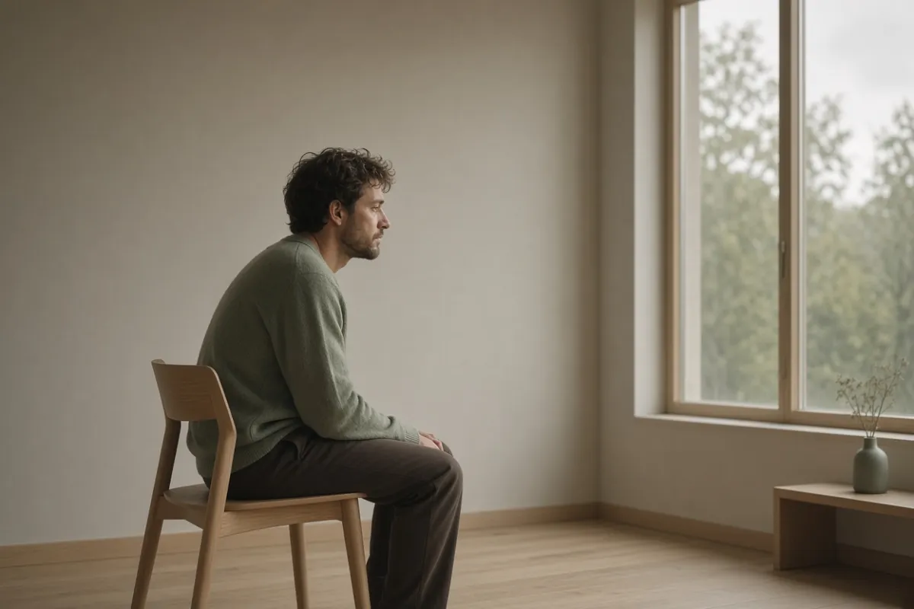

Самооценка Чувство вины — скрытый тормоз ваших целей: клинический разбор механизма и стратегии выхода Разбираем, почему хроническое чувство вины саботирует движение к целям сильнее страха неудачи, и как КПТ помогает выйти из этого цикла.
В моём кабинете однажды оказалась женщина 35 лет, успешный маркетолог. На первый взгляд — образец продуктивности. Она вела три проекта, воспитывала двоих детей и успевала на курсы итальянского. Однако её главный запрос звучал парадоксально: «Я боюсь остановиться. Если я не делаю что-то важное каждую минуту, меня накрывает удушающая вина. Но чем больше я делаю, тем меньше чувствую, что делаю это правильно». Она достигла целей, которые поставила. Но каждый новый шаг сопровождался не гордостью, а облегчением от того, что «на этот раз пронесло». Знакомо? Это не про лень. Это про то, как неотрегулированное чувство вины превращается в скрытый тормоз, который отключает способность радоваться собственным достижениям и, в конечном счёте, тормозит любое движение вперёд.
Механизм торможения: как вина блокирует «газ»
В норме чувство вины — это социальный регулятор, сигнал о том, что мы нарушили значимые для нас или группы нормы. Это адаптивная эмоция, если она помогает скорректировать поведение и восстановить отношения. Но когда вина становится хронической, она перестаёт быть полезным сигналом и превращается в фоновый шум, который мешает считывать собственные потребности и цели. С точки зрения когнитивно-поведенческой терапии (КПТ), здесь работает несколько когнитивных искажений. Главное из них — чрезмерная персонализация ответственности. Человек с хронической виной берёт на себя ответственность за вещи, на которые не может повлиять: настроение других людей, погоду, исход событий, где он — лишь один из факторов. Каждый раз, когда такой человек решает потратить время на себя, его мозг активирует схему «Я эгоист и причиняю вред». Чтобы снизить тревогу от этой мысли, он либо «откупается» действием (делает ещё больше для других), либо саботирует собственный успех. Психологически это работает как аварийный тормоз: вы начинаете разгоняться к своей цели, но внутренний критик нажимает на педаль, и вы откатываетесь на старт или замедляетесь до полной остановки.
Когнитивные ловушки: «Должен» и «Недостаточно хорош»
В основе «токсичной» вины лежит набор глубинных убеждений, сформированных часто ещё в детстве. Классическая схема звучит так: «Я должен быть идеальным, чтобы меня любили и принимали. Если я не идеален, я виноват». В реальности достижения целей это проявляется через так называемый «диктатор долженствований» — когнитивное искажение, описанное Аароном Беком. Вы ставите себе задачи не из здорового желания развития, а из жёсткого предписания: «Я должен зарабатывать больше (иначе я неудачник)», «Я должна успеть всё (иначе я плохая мать/жена)». Когда цель достигается под давлением «должен», мозг не получает дофаминового подкрепления за успех. Вместо этого наступает кратковременное облегчение, за которым тут же следует новый виток требований. Второй распространённый паттерн — руминация (зацикленное пережёвывание). Вы не просто проанализировали ошибку, вы застряли в ней: «Я тогда не дожал, я должен был сделать по-другому». Эта ментальная жвачка занимает когнитивный ресурс, который вы могли бы направить на планирование следующего шага. Вместо движения вперёд вы тратите энергию на самобичевание за прошлое, которое уже не изменить.
Как отличить здоровую вину от саботажника?
Здоровая, адаптивная вина конкретна и конечна. Она связана с действием, которое можно исправить: «Я опоздал на встречу — я извинюсь и в следующий раз выйду раньше». После исправления эмоция уходит. Хроническая, саботирующая вина — диффузная и бесконечная. Её невозможно «отработать» до конца, потому что она привязана не к поступку, а к самоощущению («Я — источник проблем»). Чтобы провести дифференциацию, я предлагаю клиентам использовать простой, но клинически валидный критерий: критерий направления энергии. Если чувство вины подталкивает вас к действию, которое решает проблему (извиниться, исправить ошибку, компенсировать), — это сигнал. Если чувство вины заставляет вас застыть, бесконечно извиняться, отказываться от своих планов или делать за других их работу — это тормоз.
Техника «Реструктуризация вины»
Когда вы замечаете чувство вины, задайте себе три вопроса и запишите ответы буквально на бумаге: 1) Какое именно моё действие (или бездействие) вызвало это чувство? (Будьте конкретны). 2) Действительно ли я нёс за это полную ответственность? Какие факторы были вне моего контроля? (Это помогает снизить персонализацию). 3) Какое одно конкретное действие я могу сделать прямо сейчас, чтобы исправить ситуацию (если это возможно), и какое действие будет просто актом самобичевания? (Выбирайте конструктивное действие). После выполнения — сознательно скажите себе: «Я сделал(а) всё, что мог(ла) в тот момент. Я оставляю этот опыт в прошлом и фокусируюсь на следующем шаге».
Стратегия выхода: от торможения к устойчивому движению
Выход из цикла саботирующей вины — это не про «перестать винить себя». Это про замену дисфункционального паттерна на функциональный. Первый шаг — разграничение вины и ответственности. Ответственность — это про ваш вклад в результат. Вина — про глобальную оценку себя как «плохого». Вы можете нести ответственность за ошибку, не будучи «плохим человеком». Попробуйте переформулировать: не «

Сложно справиться с этим в одиночку?
На первичной 20-минутной ознакомительной встрече мы бережно разберем вашу ситуацию.
Записаться на консультацию